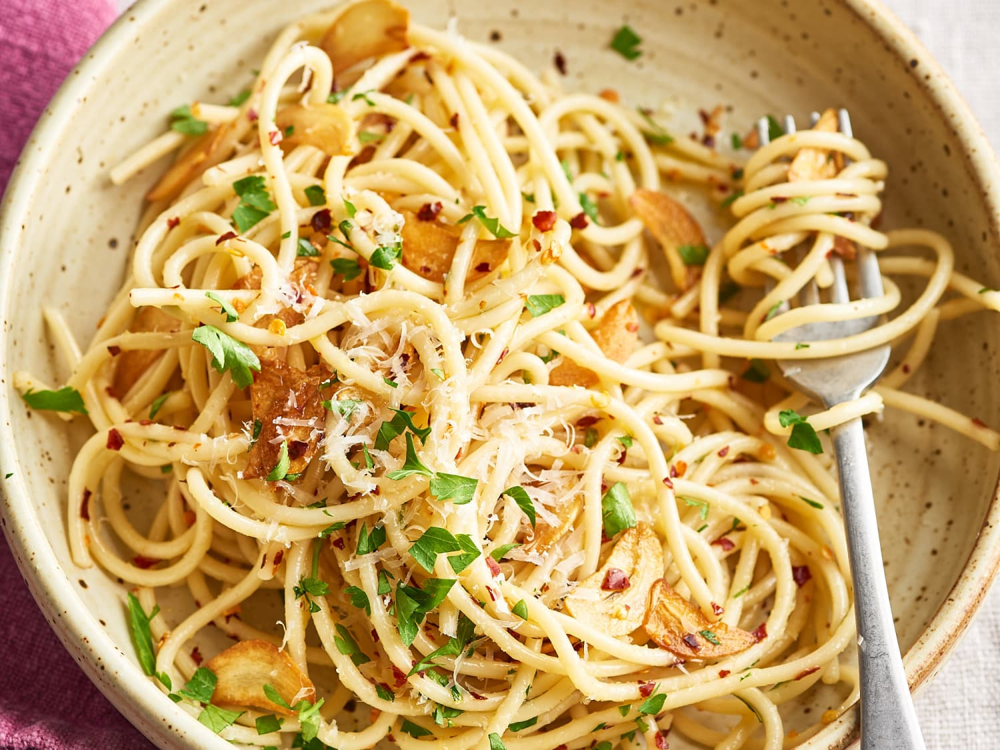

Spaghetti Aglio e Olio

Description
Ingredients
- 200 g Spaghetti
- 2 tbsp Extra Virgin Olive Oil
- 4 garlic cloves, finely chopped
- Chilli Flakes (optional)
- Parsley, finely chopped (optional)
Steps
- Bring a large pan of well-salted water to the boil and cook the
spaghetti for about 10 mins, or until al dente.
- When the pasta is nearly ready, heat the oil in a frying pan set over a
medium heat and sizzle the garlic and chilli, if using, for 1 minute until
fragrant and the garlic is lightly golden but not brown (the garlic will taste bitter if it gets too dark).
- Drain the spaghetti and add it to the garlicky oil with the parsley. Season and toss to combine, then serve.